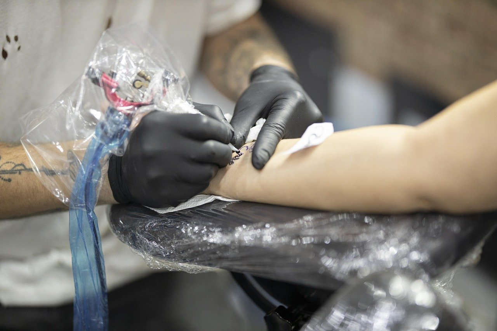
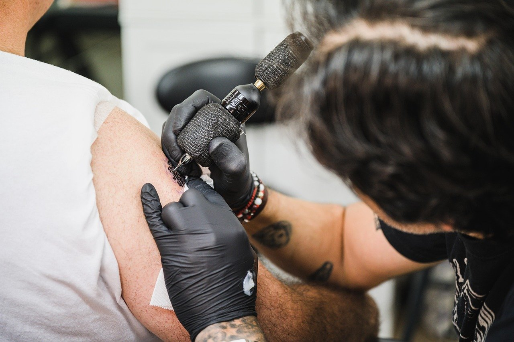
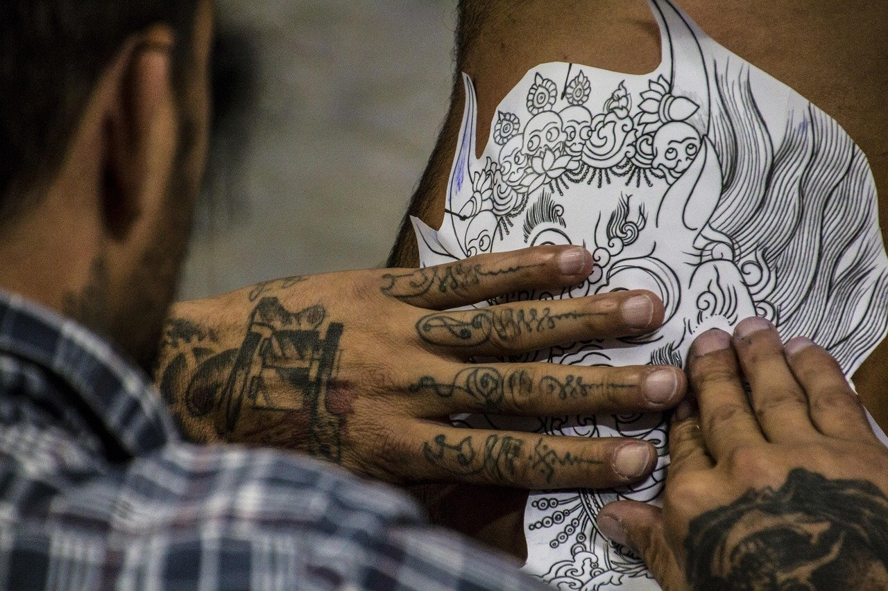

Sunrise Tattoo

Custom tattoo designs and tattoos in the Taylor Arts Collective.
Tattoos made for you
Sunrise Tattoo is inside the Taylor Arts Collective on Taylor Street in Nashville. We make custom tattoo designs based on your ideas.
Walk-ins are accepted if possible. You can also book an appointment. Public and private tattoo events are available too.
- Location
- Inside the Taylor Arts Collective
- Appointments
- Available for tattoos
- Events
- Tattoos at public or private events
Services
-
Custom tattoo designs
Designs based on your ideas.
-
Tattoos
By appointment or walk-in.
-
Public tattoo events
Public events for tattoos.
-
Private tattoo events
Private events for tattoos.
Tattoo work
Tap a photo to see it larger.


Book a time or walk in
Walk-ins are accepted if possible. Appointments are available for tattoos.
- Address
- Inside the Taylor Arts Collective
100 Taylor Street, Nashville - Hours
- Tuesday to Saturday, 10 a.m. to 6 p.m.
- Phone
- (615) 664-7724